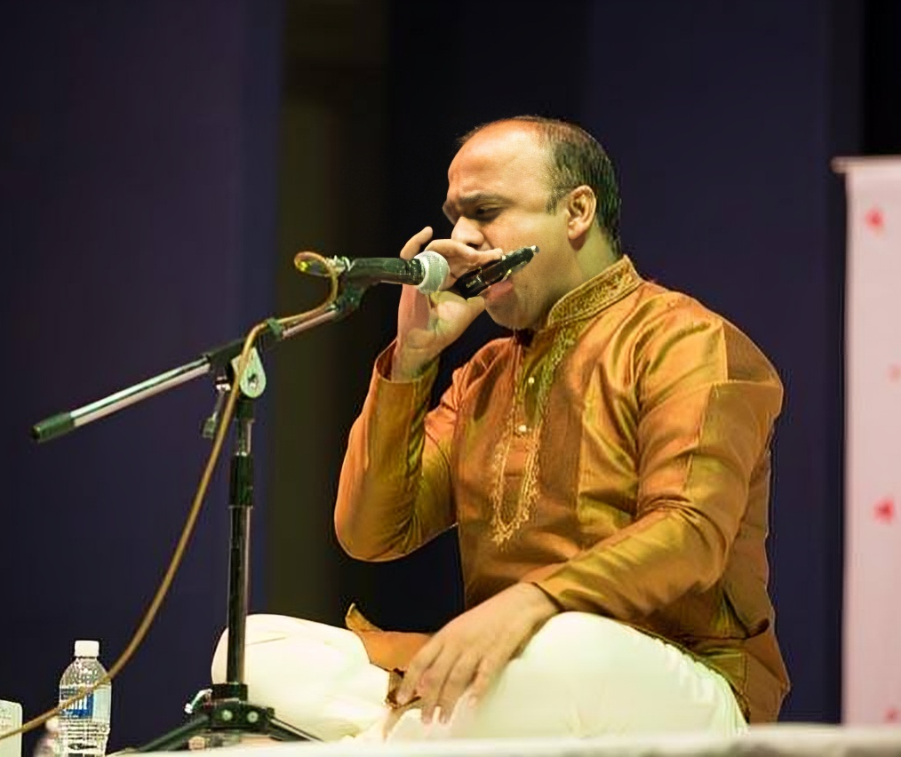

Guru Shishya Parampara
By Sunil Patil
By Sunil Patil
Established in 2009 by Shri Sunil Patil, Surabhi Music Academy pays homage to the time-honored tradition of Guru Shishya Parampara (teacher-disciple relationship). Sunil Patil, a disciple of Pt.Shri Vivek Sonar from the Maihar Gharana ( a senior disciple of Pt. Hariprasad Chaurasia), exemplifies virtuosity in both the mouth organ and flute, dedicating his life to music, teaching, and the advancement of the Mouth Organ. He has foundation in Hindustani Classical Music since childhood.
His passion for the instrument gave rise to the annual Harmonica Festival, a platform showcasing the world's finest mouth organ talents. Not only does this event promote the instrument nationally, but it also offers students the opportunity to display their skills in front of a vast audience alongside seasoned masters.
His fervent dedication to disseminating music for the betterment of society has led to the cultivation of a substantial following of disciples in both Harmonica and Flute. He offers training in both instruments through both offline and online modalities.

B-2, Katepuram Society (Phase 1),
New Sangvi, Pimple Gurav
Pune, Maharashtra-411061
Phone: 9923155267, 8668204290